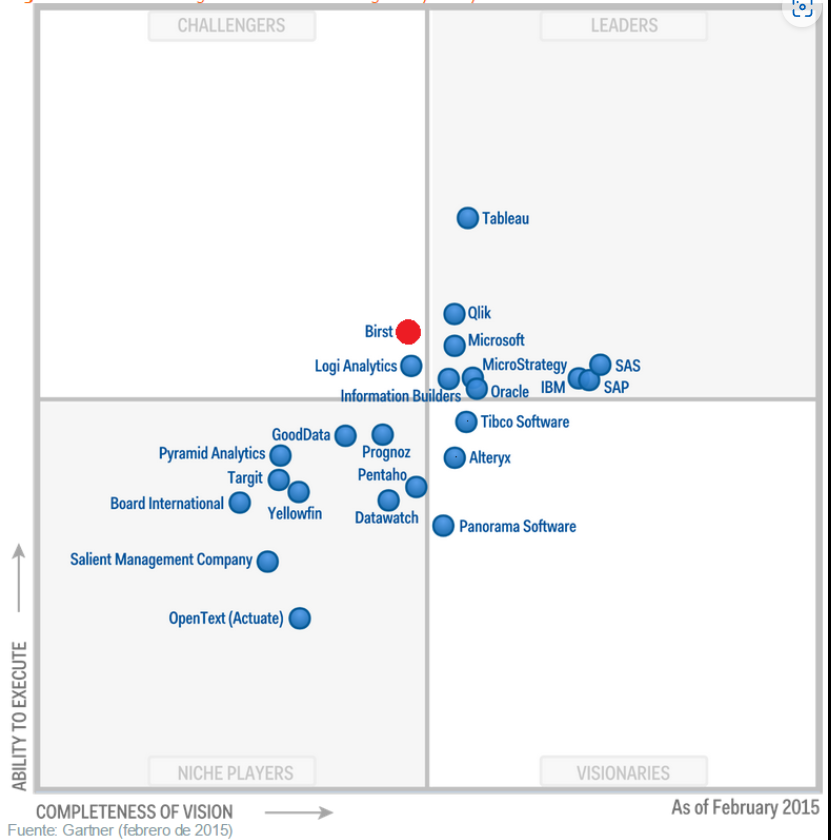

INTRODUCCIÓN¶
Concepto de Business Intelligence¶
Business Intelligence, es una estrategia empresarial que persigue incrementar el rendimiento de la empresa o la competitividad de negocio, basado en el histórico de datos de la compañía para el análisis y proyección de estos.
El histórico de datos recopilados de las organizaciones (operaciones diarias o transacciones), normalmente se almacenan en Data Marts departamentales, Data Warehouse corporativos o incluso en ficheros estructurados.
Las principales razones que justifican una inversión en BI son:
- Visibilidad de lo que está pasando en el negocio.
- Informes/reportes centralizados.
- Análisis de tendencias y predicción del futuro.
- Toma de decisiones efectivas sobre productos que funcionan y lo que no funciona.
- Centraliza datos dispersos.
- Visión real del contexto empresarial en el segmento de negocio.
- Validación de la posición de la compañía respecto a los competidores.
- Tendencias del mercado.
Herramientas ETL (Extracción-Transformación-Carga)¶
Existen unas herramientas que se utilizan para la extracción del contenido desde los orígenes, modelado de dicha información y carga en los contenedores de destino.
La extracción se realiza de diferentes fuentes y con diferentes formatos. Una vez extraída la información y filtrada, se realizan las transformaciones necesarias para obtener los resultados finales.
Para llegar a los resultados finales, se pueden encontrar tablas intermedias donde se inserta información con el dato en bruto. Estas tablas, al finalizar el proceso de modelado, pueden ser eliminadas. Por lo tanto estos almacenes de datos dan lugar a los 'stages' que son escenarios intermedios de carga.
Cuadros de Mando (Dashboards)¶
Los cuadros de mando son recursos visuales que facilitan la representación del contenido analizado desde los almacenes de datos de origen, para posteriormente agilizar la toma de decisiones.
Además de presentar una visualización amigable de los datos, permite la interacción entre ellos y el usuario, de forma que sea rápido y sencillo la realización de segmentaciones y filtrados, con el fin de poner el foco en un determinado dato.
Esta es la parte más importante para el cliente, ya que todos los componentes anteriores, son transparentes para este.
KPIs (Key Performance Indicators)¶
Son indicadores Clave de Desempeño o Medidor de Desempeño, que hace referencia a una serie de métricas que se utilizan para sintetizar la información, de forma que se detallen cuales son los objetivos de medición.
Herramientas utilizadas en Cuadros de Mando¶
Evolución según Gartner:

Las herramientas más usadas según Gartner son:
- Microsoft, con PowerBI.
- Tableau, con Tableau Desktop, Tableau Prep, Tableau Online.
- Qlik, con View, Sense y Cloud.